Dream State Series
DreamState is a personal body of work created in early 2024, featuring models Mawntel and Gillian. Shot across multiple locations in Dallas — both outdoors and in-studio — the series explores vibrant color, stylized fashion, and the surreal clarity of spring. We styled three distinct looks that flowed between fantasy and grounded beauty, brought to life with the help of our friend Gabby on wardrobe.
The concept was co-developed with Gillian, and it quickly became one of my favorite projects to date. Every frame felt intentional, fresh, and creatively charged — the kind of shoot that reminds you why you do this in the first place.
Credits:
Photography, Lighting, Editing – Peter Sanjur
Models – Mawntel & Gillian
Styling – Gabby
Creative Direction – Peter Sanjur & Gillian
Location – Dallas, TX
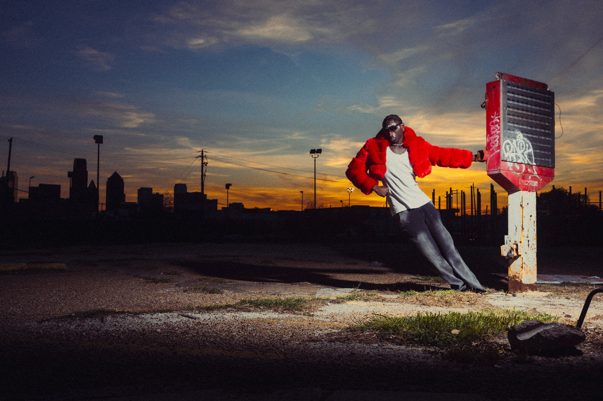
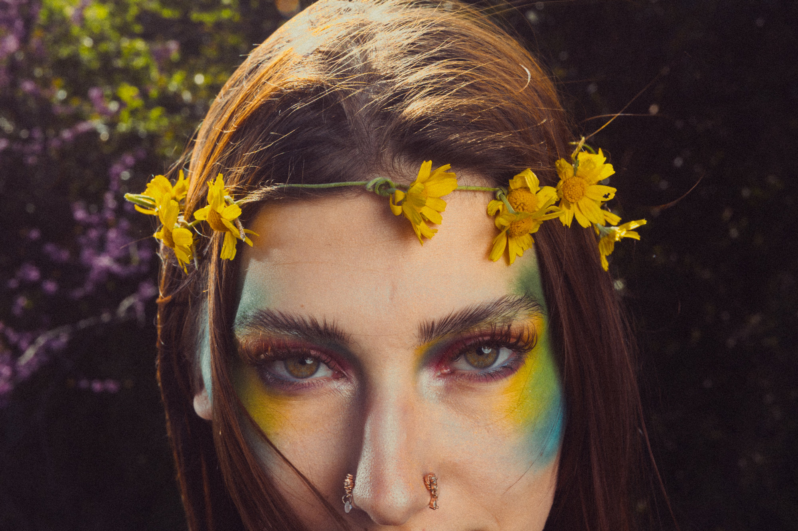

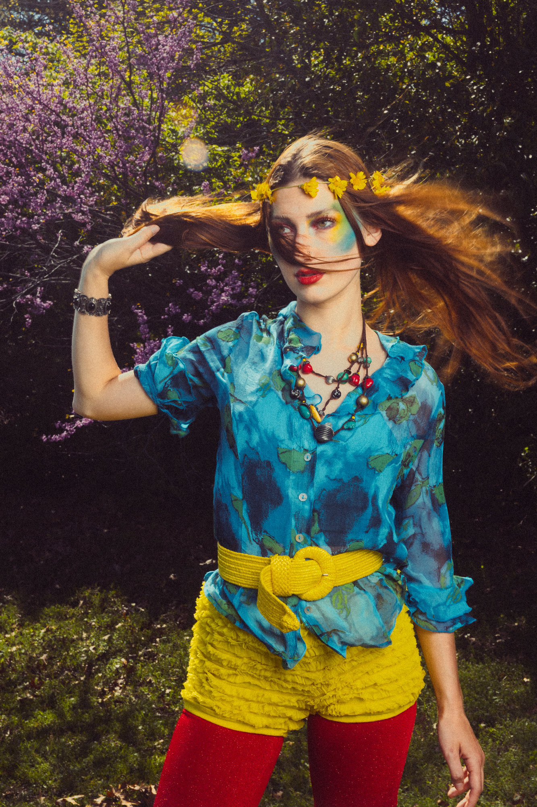
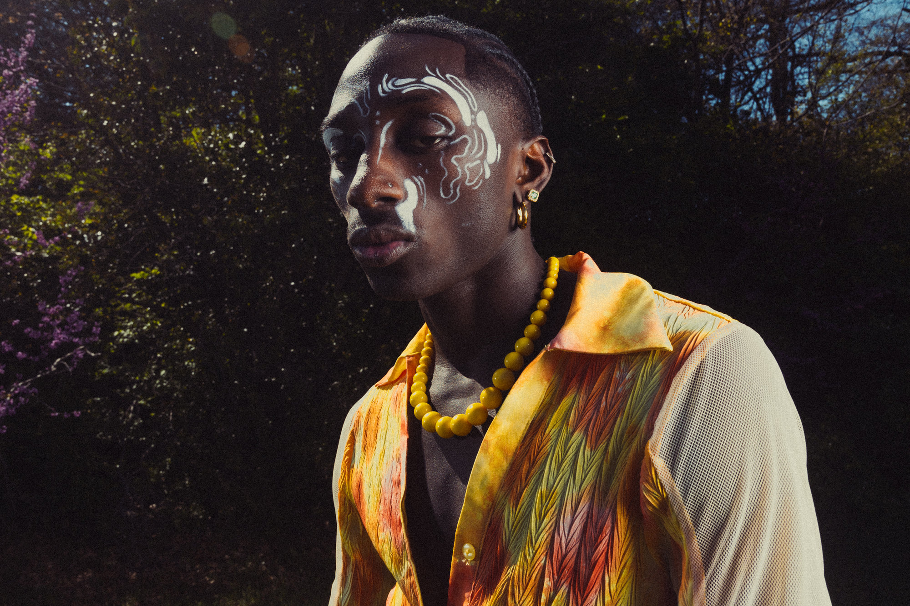
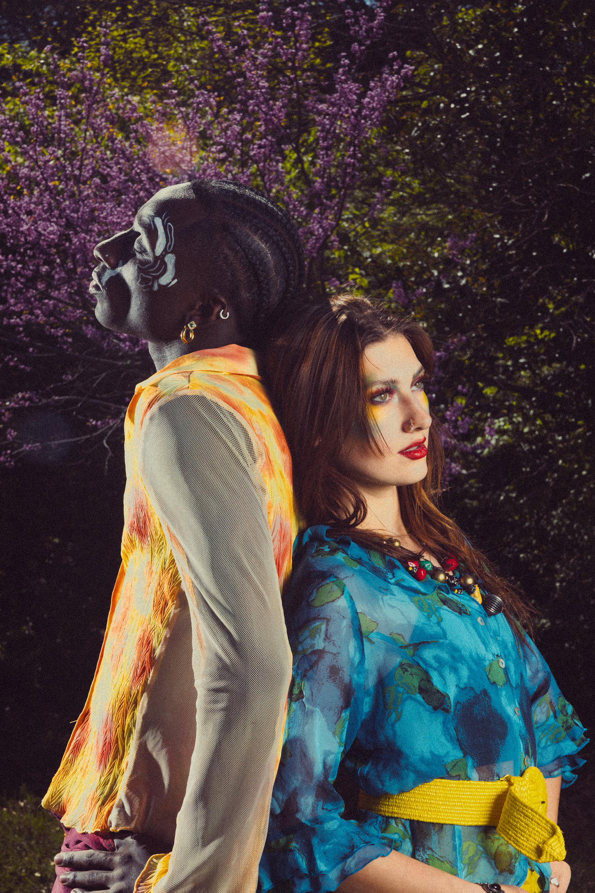
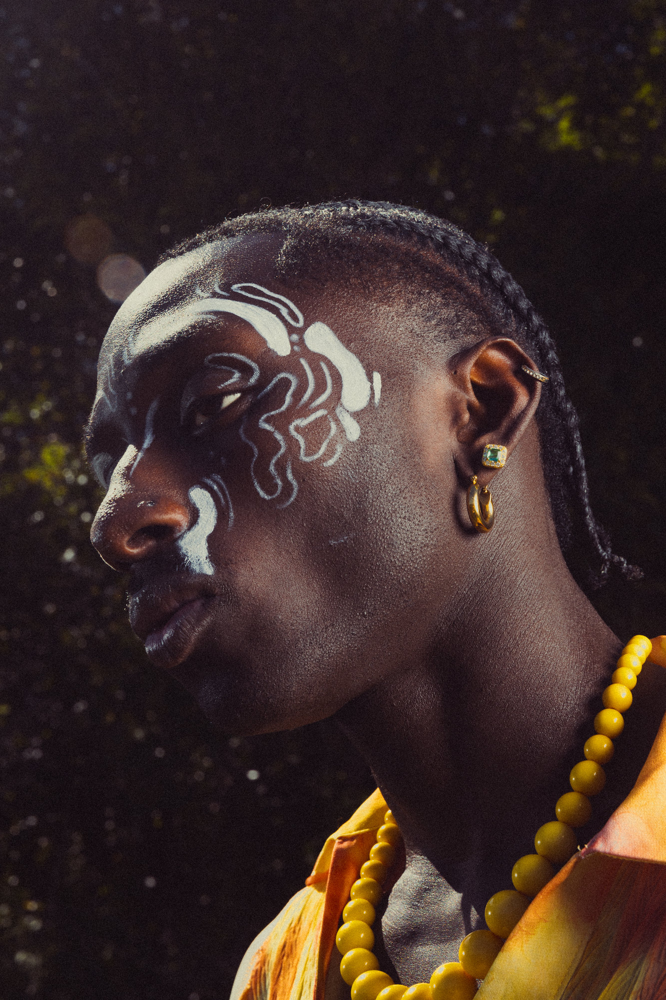
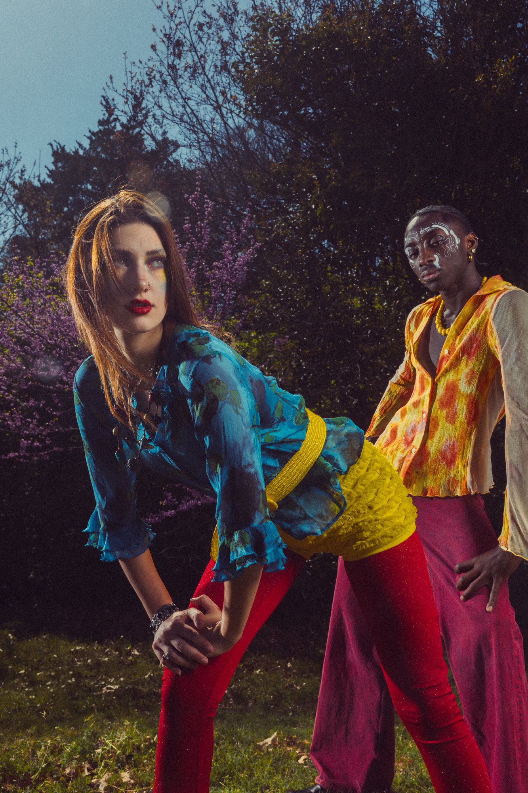
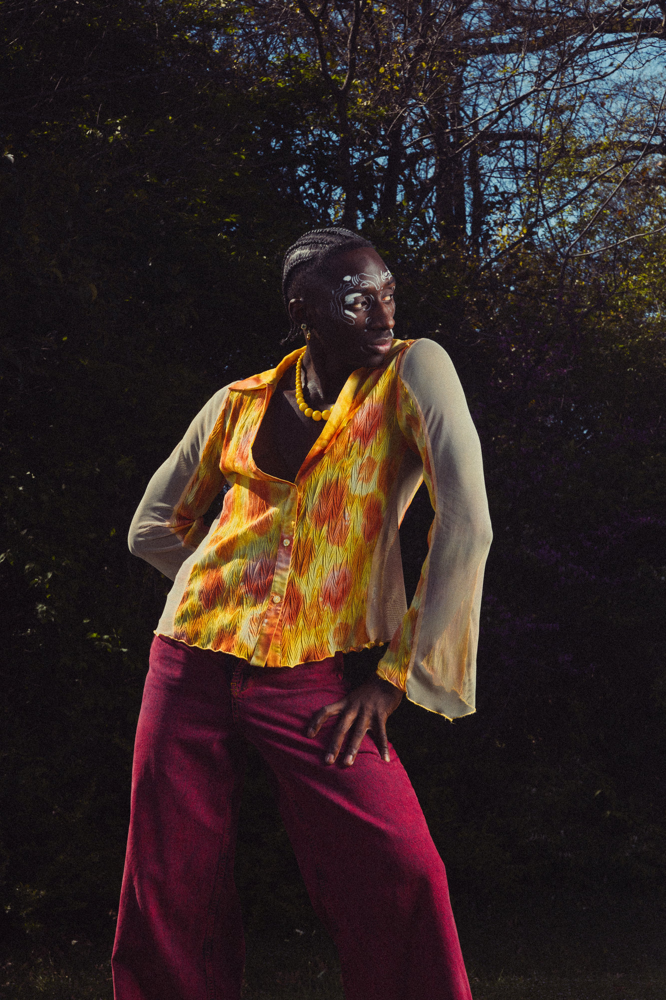
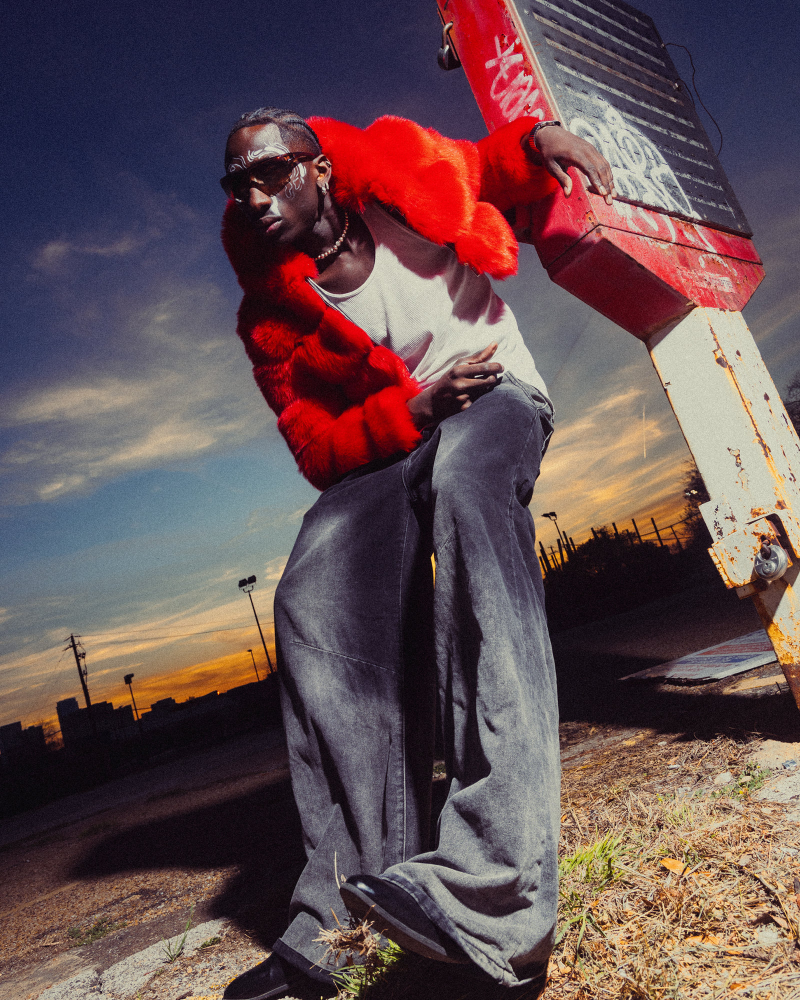
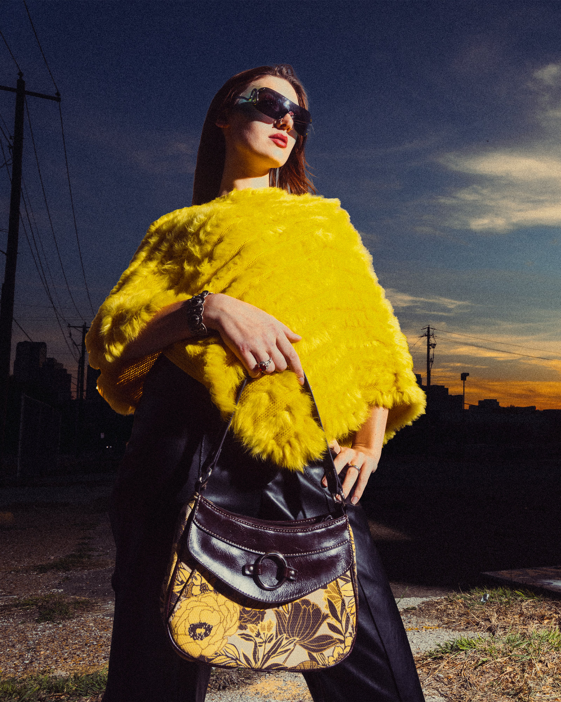
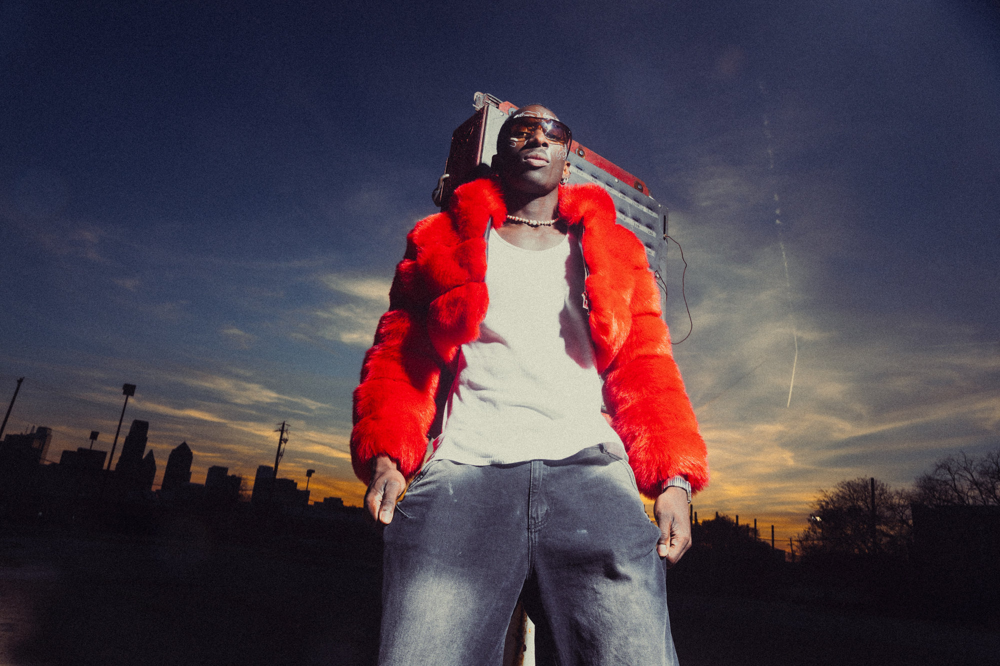
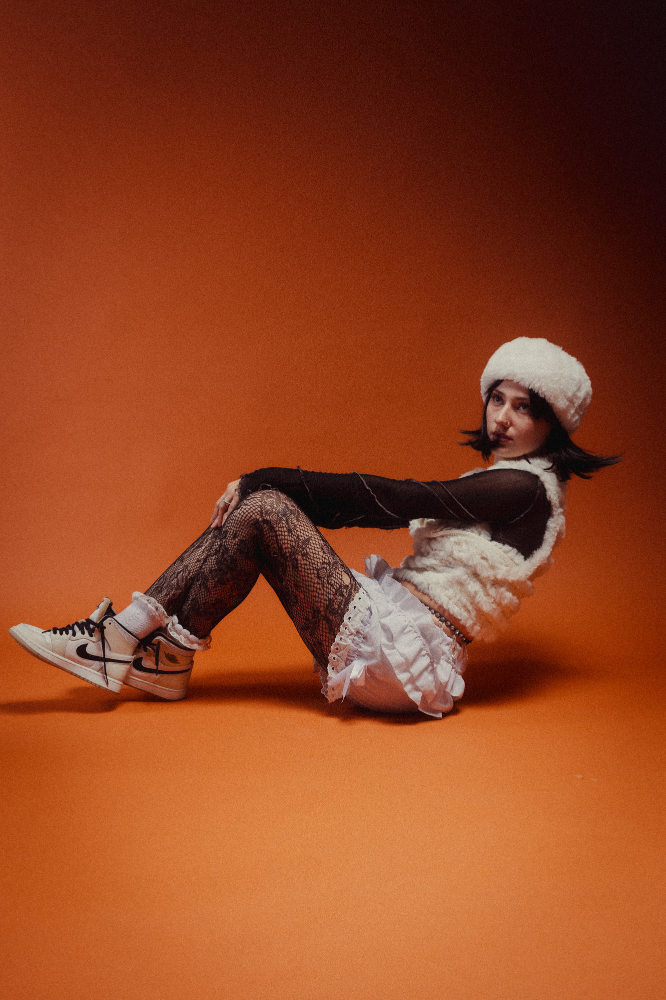
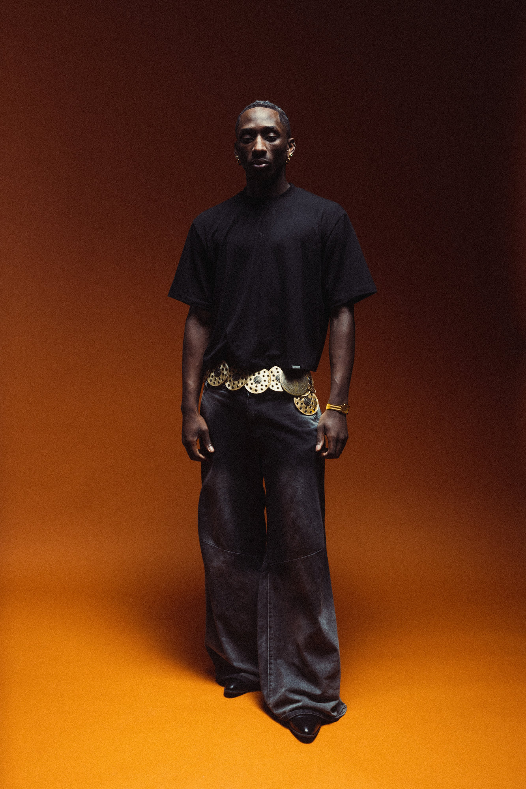
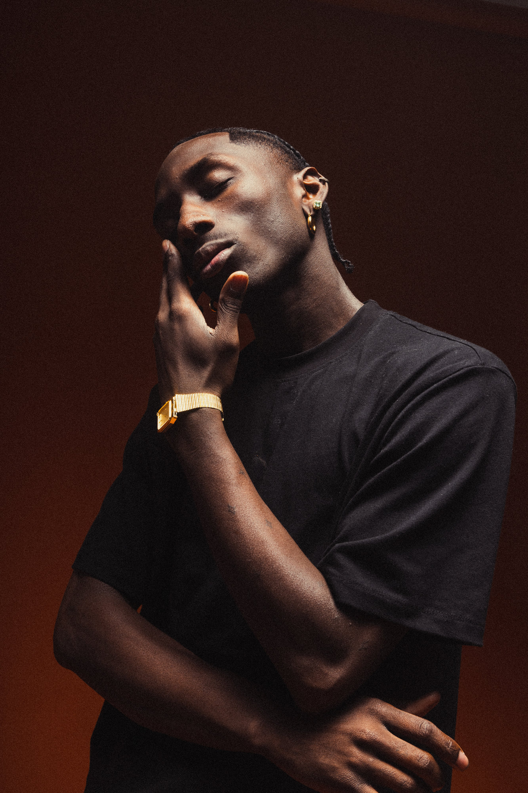